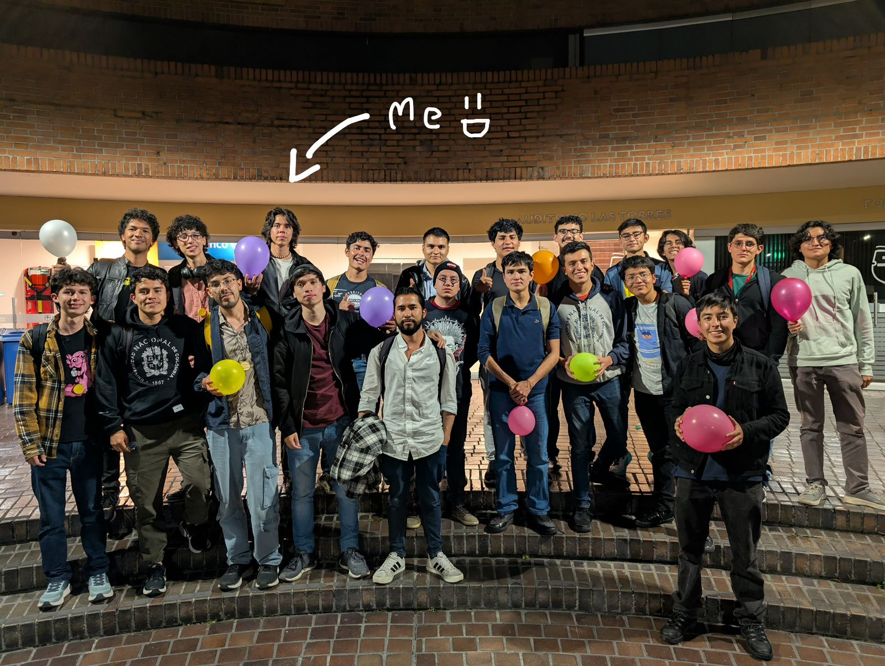

I am a student at Universidad Nacional de Colombia (UNAL). I am passionate about the intersection of applied mathematics and software development. My main focus lies in algorithm design, competitive programming, and solving complex logical problems.
Outside of coding, I enjoy strength training (calisthenics) and I am interested in social impact, having participated in technical tables for youth public policy and cultural planning. Additionally, I am an avid reader of philosophy and classical literature, and an excellent comedian!
B.S. in Mathematics and Computer Science (In progress)
B.S. in Mathematics (Incomplete)
Active participation on platforms like AtCoder, Codeforces, Vjudge, and SPOJ. Creator of the First-ICPC-Contest-UN repository, a collection of C++ boilerplates and base algorithms for competitions.
Backend Developer for the event held in March 2026. Led the development of badge systems, attendance tracking, certificate generation, and data analysis.